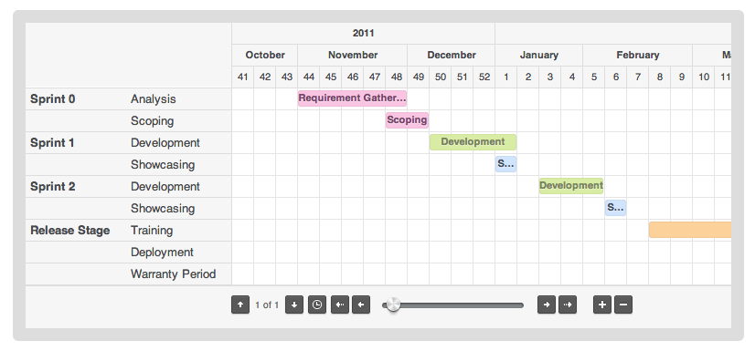
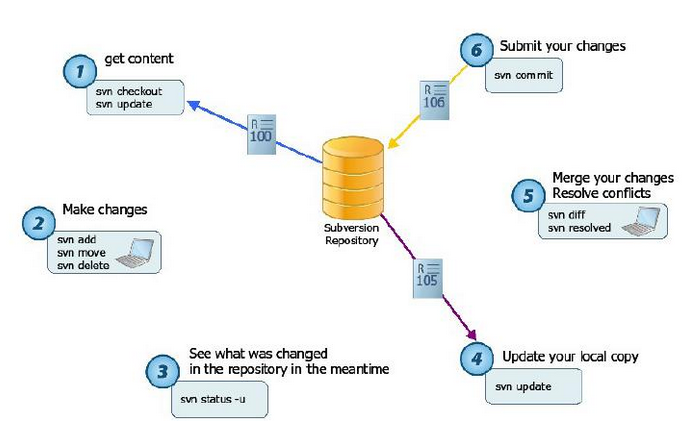

PMM

할일관리
개인이 해야할 일을 입력 할 수있고 관리자도 구성원에게 할일을 전달 할 수 있습니다.
다양한 구성원에게 할일을 전달하고 각자 전달된 할일을 수행하고 자신의 할일 또한 추가 할 수 있습니다.
할일에는 제목과 내용 그리고 시작과 종료 시간까지 입력하여 간트차트와도 연동이 되게 구성할 수 있습니다.

간트차트
해야할 장,단기 계획들을 간트차트로 한번에 편안하게 볼 수 있습니다.
일정을 구간에 맞추어 단순화된 간트 차트로 표현합니다.
사용자는 단순히 할일관리에 데이터를 입력하는 것만으로도 간트 차트가 표현됩니다.
채팅
실시간 채팅으로 구성원과의 채팅이 가능합니다. 익숙하고 편안하게 구성원과 이야기 할 수 있습니다.
사용자간의 채팅내역은 프로젝트 종료 혹은 삭제 될때까지 남아 있어 다시 확인이 가능합니다.
단순하지만 핵심적인 으사소통 방법입니다.

형상관리
프로젝트에서 나오는 산출들을 효율적으로 관리 할 수 있습니다.
각종 문서 파일이나 각종 소스들을 효과적으로 관리 할 수 있습니다.
단순 저장소로도 사용이 가능하여 개발자가 아니더라도 충분히 활용 가능합니다.